- Chantier — Rénovation complète, corps de ferme
- Année — 2026
On est parti d'ouvertures d'origine, fatiguées. Aujourd'hui, des menuiseries neuves, teinte anthracite, qui vont si bien à la brique.
Du sur-mesure, forcément : dans l'ancien, aucune ouverture n'est pareille. Triple vitrage pour le confort, et six volets roulants motorisés qu'on pilote depuis son téléphone.
Ce genre de transformation, c'est vraiment ce que je préfère dans le métier.
Avant / après — faites glisser le curseur
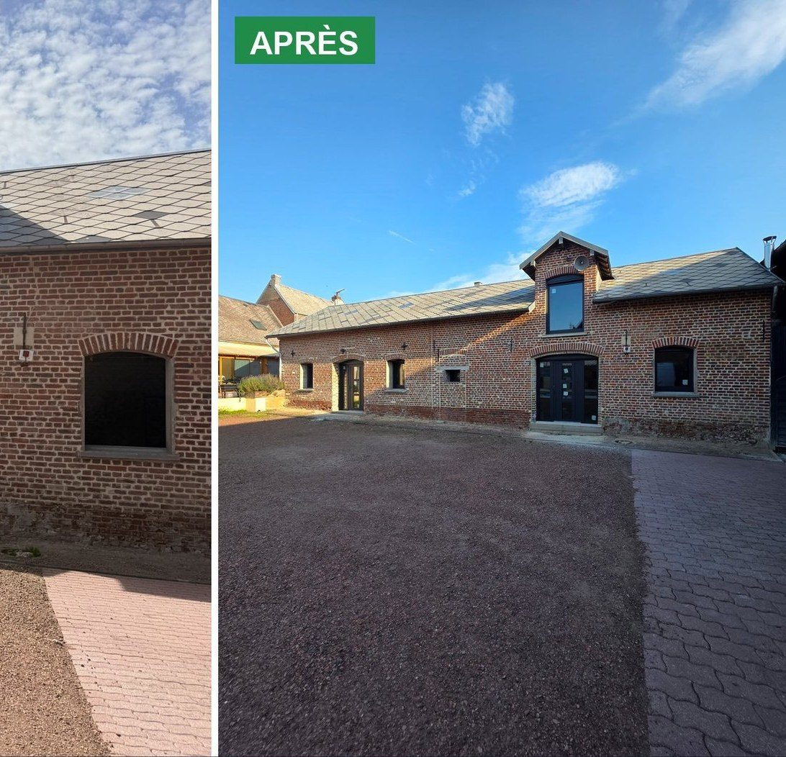
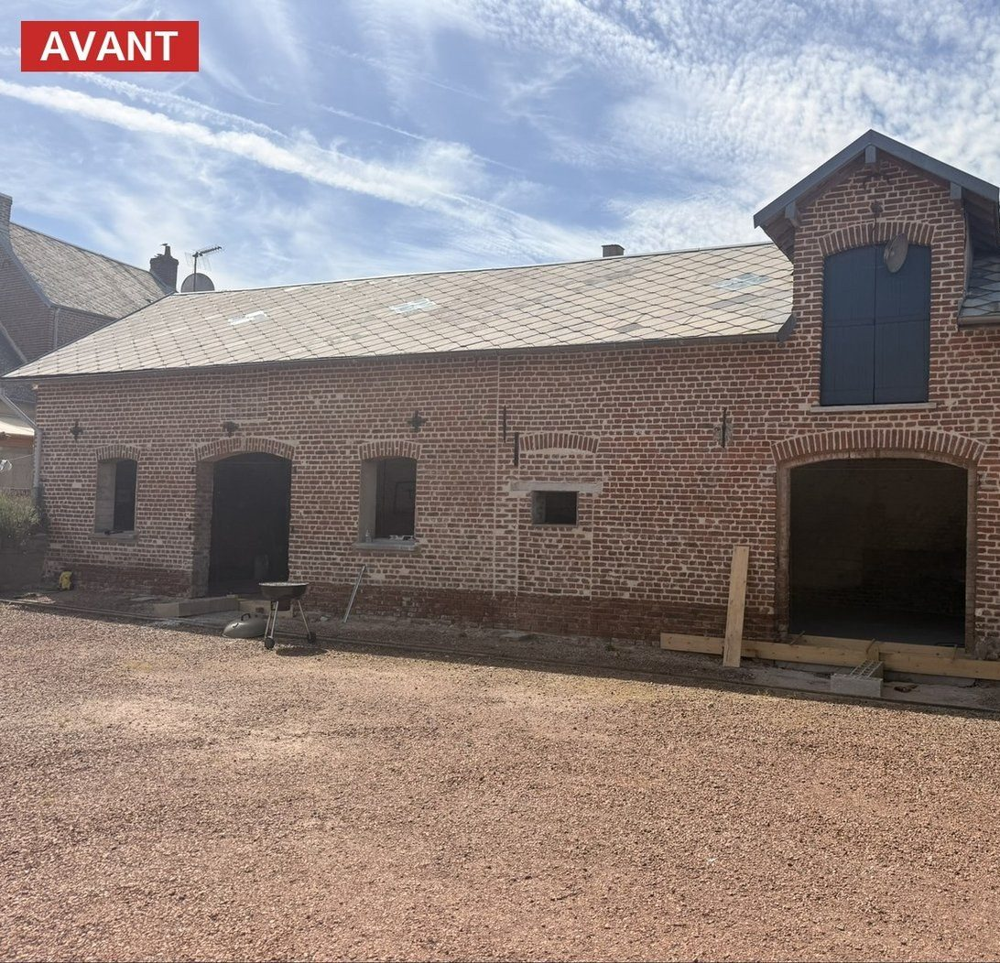
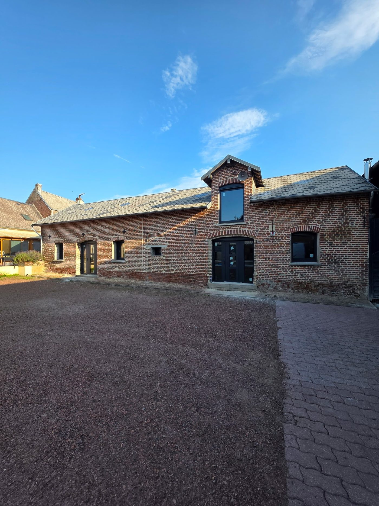
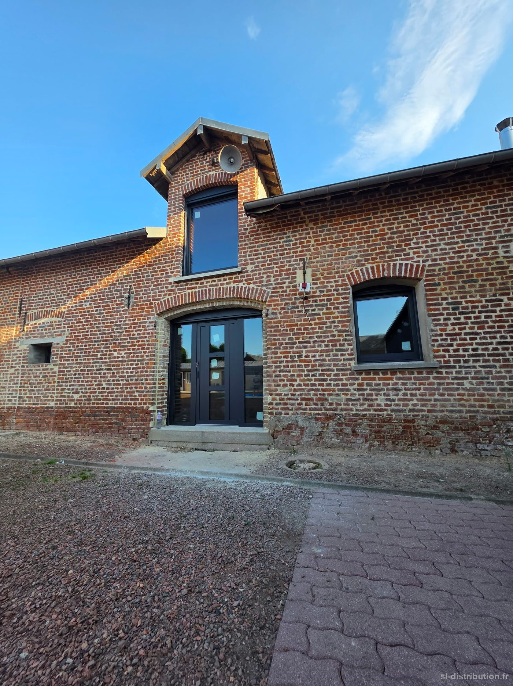
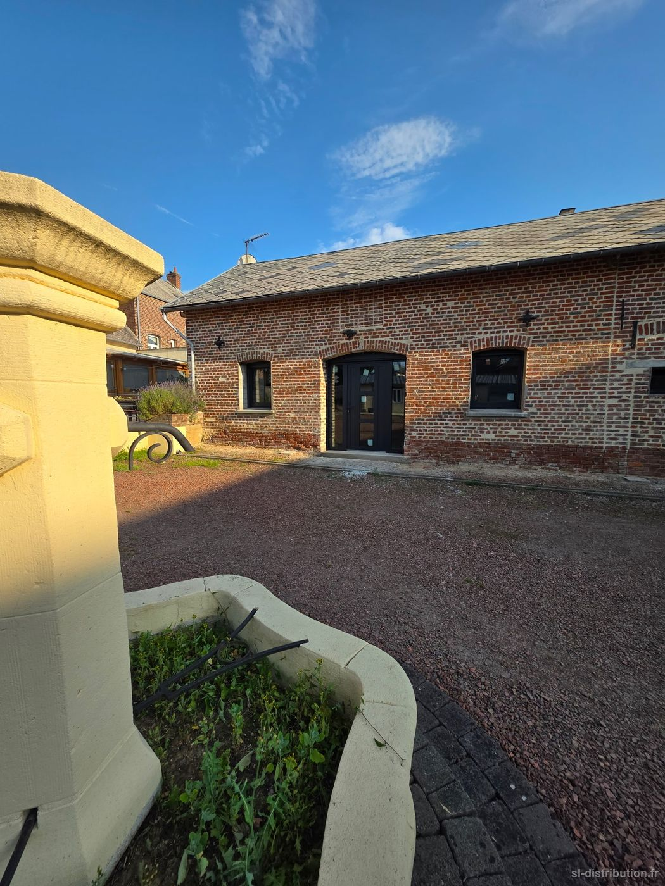
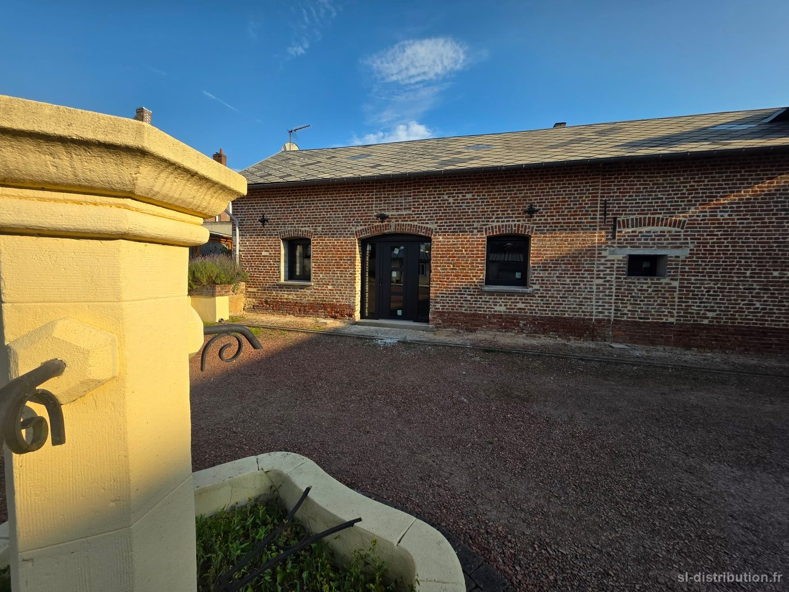
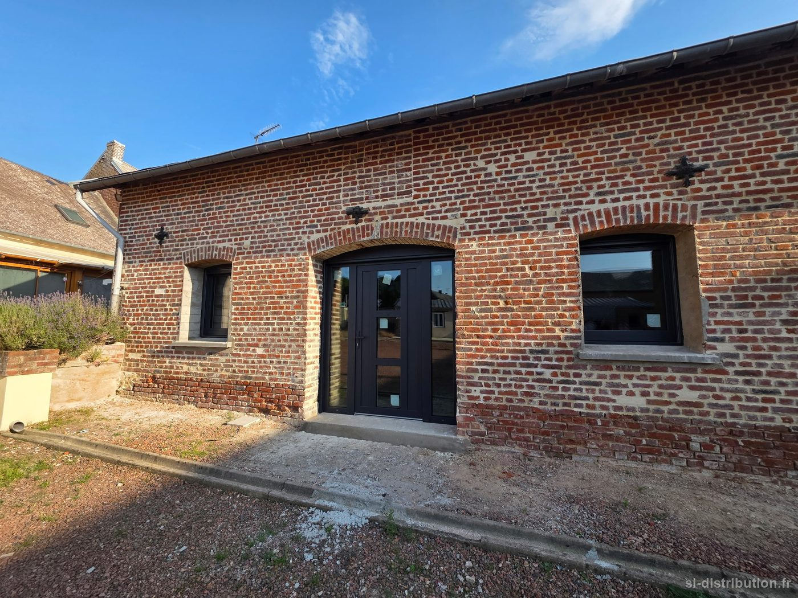
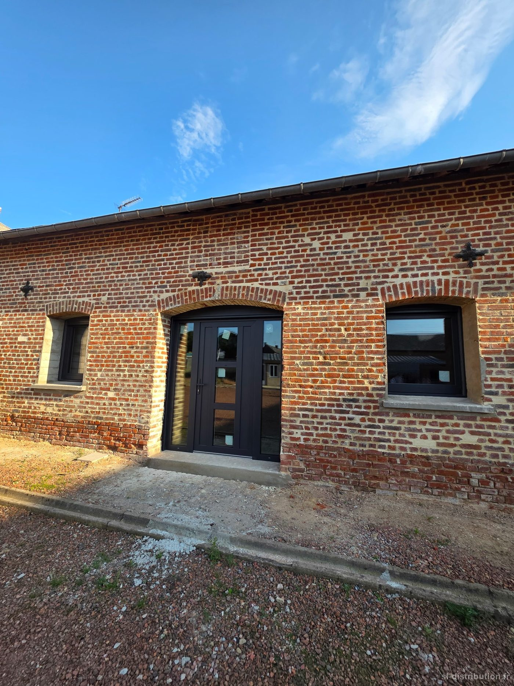
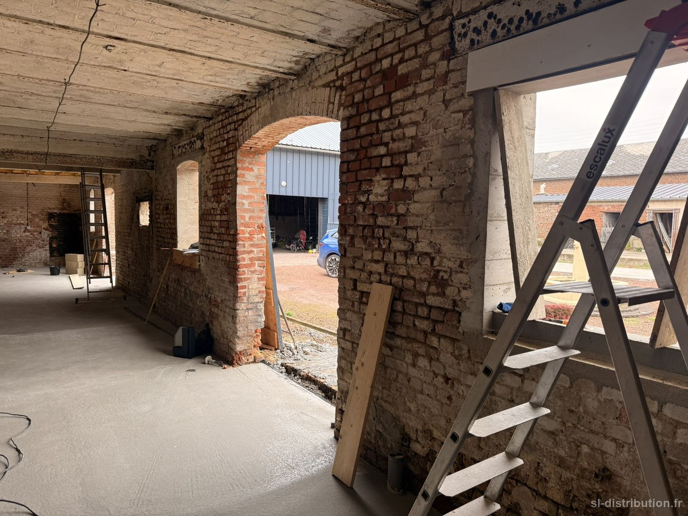
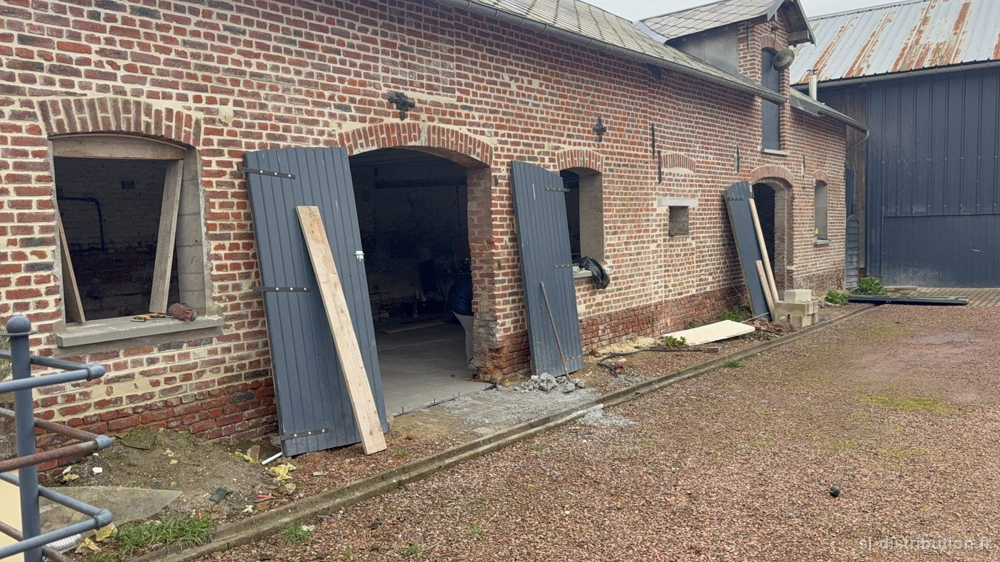

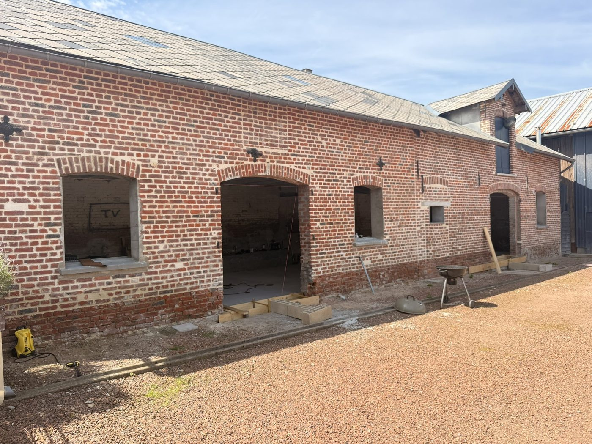